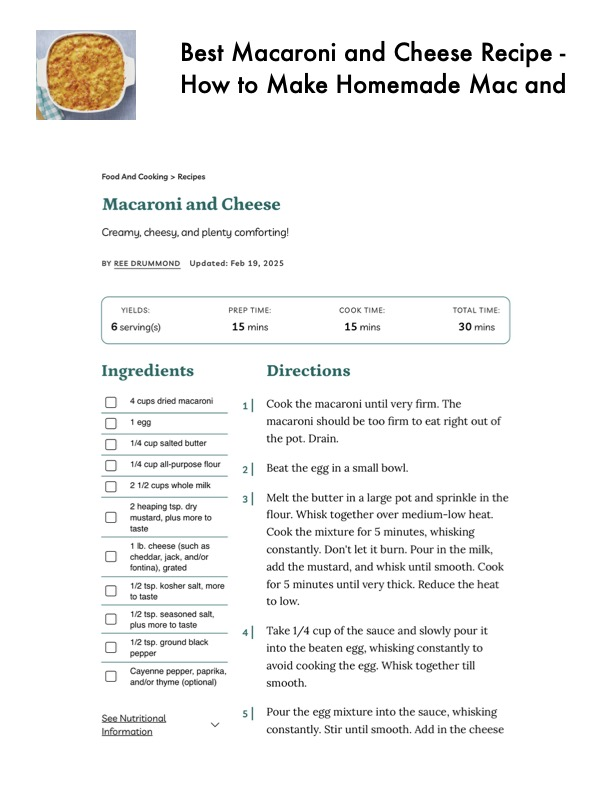

Best Macaroni and Cheese Recipe -

Original cookbook page 809
Ingredients
- 4 cups dried macaroni 1| Cook the macaroni until very firm. 1
- 0 tegg macaroni should be too firm to eat 1
- [_] 1/4 cup salted butter the pot. Drain.
- CJ 'cup alkpurpose flour > |__ Beat the egg in a small bowl.
- (J 2.1/2 cups whole milk
- oh 'ep. 3| Melt the butter in a large pot and sy
- leaping tsp. dry . .
- (mustard, plus more to flour. Whisk together over medium-
- ____1 Ib, cheese (such as 4 'i
- (cheddar, jack, and/or constantly. Don't let it burn. Pour in
- fontina), grated add the mustard, and whisk until sm
- (> 1/2 tsp. kosher salt, more for 5 minutes until very thick. Reduc
- — to taste to low.
- > '1/2 tsp. seasoned salt,
- —_ Plus more to taste 4| Take 1/4 cup of the sauce and slowl
- [> 1/2 tsp. ground black A ole
- LO pepper into the beaten egg, whisking const:
- — Cayenne pepper, paprika, avoid cooking the egg. Whisk togett
- — and/or thyme (optional) smooth.
- 5 | Pour the egg mixture into the sauce
- See Nutritional
- Information
- constantly. Stir until smooth. Add in
Instructions
- taste Cook the mixture for 5 minutes, wh
Recipe #809 from collection